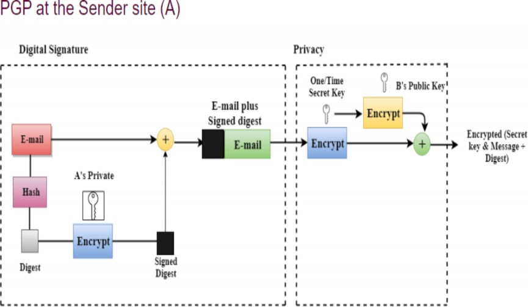
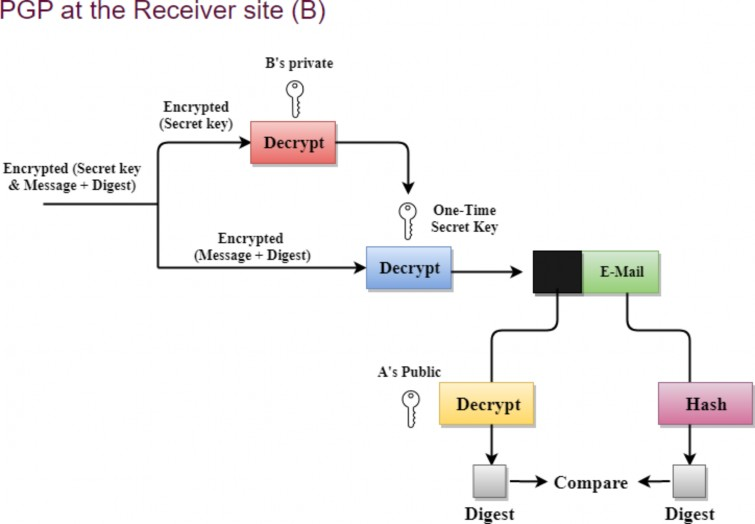
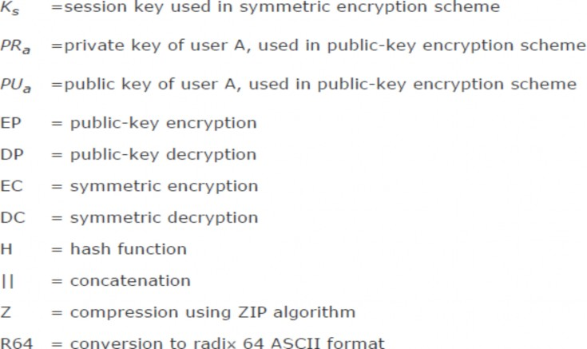
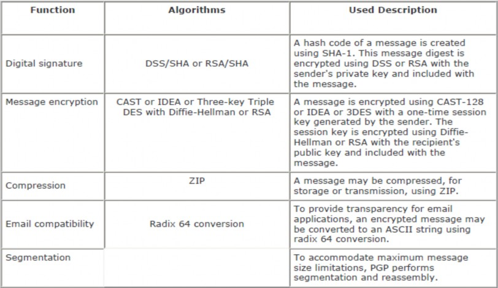
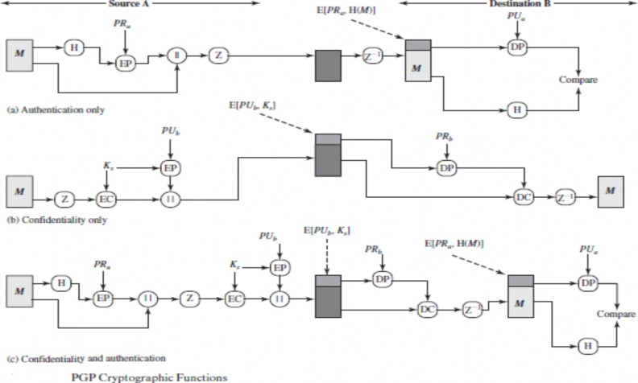
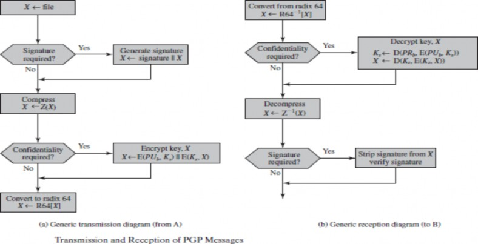
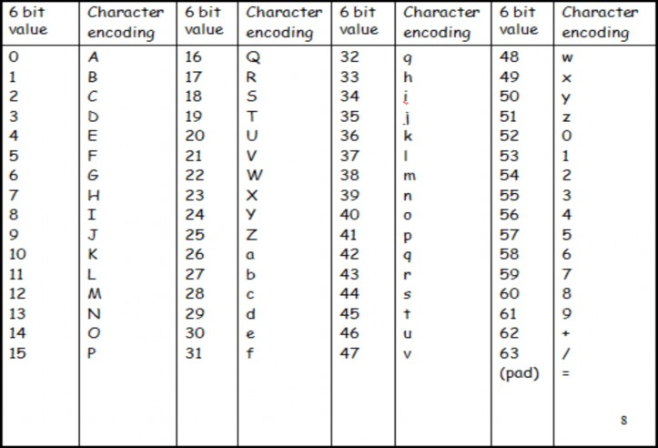

16MDS82
DATA PRIVACY AND SECURITY
(Unit IV-Part 1)
Outline
Pretty Good Privacy(PGP)
Pretty Good Privacy or PGP encryption, is a data encryption program that gives cryptographic privacy and authentication for online communication.
It is often used to encrypt and decrypt texts, emails, and files to increase the security of emails.
PGP encryption uses a mix of data compression, hashing, and public-key cryptography.
It also uses symmetric and asymmetric keys to encrypt data that is
transferred across networks.
PGP stands for Pretty Good Privacy (PGP), invented by Phil Zimmermann.
PGP was designed to provide all four aspects of security, i.e., privacy, integrity, authentication, and non-repudiation in the sending of email.
PGP uses a digital signature (a combination of hashing and public key encryption) to provide integrity, authentication, and non-repudiation.
PGP uses a combination of secret key encryption and public key
encryption to provide privacy.
The digital signature uses one hash function, one secret key, and two private-public key pairs.
PGP is an open source and freely available software package for email
security.
PGP provides authentication through the use of Digital Signature.
It provides confidentiality through the use of symmetric block encryption.
It provides compression by using the ZIP algorithm, and EMAIL compatibility using the radix-64 encoding scheme.
The steps taken by PGP to create secure e-mail at the sender site:
The e-mail message is hashed by using a hashing function to create a digest.
The digest is then encrypted to form a signed digest by using the sender's private key, and then signed digest is added to the original email message.
The original message and signed digest are encrypted by using a one- time secret key created by the sender.
The secret key is encrypted by using a receiver's public key.
Both the encrypted secret key and the encrypted combination of
message and digest are sent together.

The steps taken to show how PGP uses hashing and a combination of three
keys to generate the original message:
The receiver receives the combination of encrypted secret key and message digest is received.
The encrypted secret key is decrypted by using the receiver's private key
to get the one-time secret key.
The secret key is then used to decrypt the combination of message and digest.
The digest is decrypted by using the sender's public key, and the original message is hashed by using a hash function to create a digest.
Both the digests are compared if both of them are equal means that all
the aspects of security are preserved.

Pretty Good Privacy (PGP)
It provides
authentication through the use of digital signature;
confidentiality through the use of symmetric block encryption;
compression using the ZIP algorithm;
e-mail compatibility using the radix-64 encoding scheme; and
segmentation and reassembly to accommodate long e-mails.
S/MIME (Secure/Multipurpose Internet Mail Extensions) is an Internet standard approach to e-mail security that incorporates the same functionality as PGP
Provides a confidentiality and authentication service that can be used for electronic mail and file storage applications
Developed by Phil Zimmermann
Selected the best available cryptographic algorithms as building blocks
Integrated these algorithms into a general-purpose application that is independent of operating system and processor and that is based on a small set of easy-to-use commands
Made the package and its documentation, including the source code, freely available via the Internet, bulletin boards, and commercial networks
Entered into an agreement with a company to provide a fully
compatible, low-cost commercial version of PGP
PGP has grown explosively and is now widely used.
It is available free worldwide in versions that run on a variety of
platforms, including Windows, UNIX, Macintosh, and many more.
It is based on algorithms that have survived extensive public review and are considered extremely secure. Specifically, the package includes RSA, DSS, and Diffie-Hellman for public-key encryption; CAST-128, IDEA, and 3DES for symmetric encryption; and SHA-1 for hash coding.
It has a wide range of applicability, from corporations that wish to select and enforce a standardized scheme for encrypting files and messages to individuals who wish to communicate securely with others worldwide over the Internet and other networks.
It was not developed by, nor is it controlled by, any governmental or standards organization.
PGP is now on an Internet standards track (RFC 3156).
Pretty Good Privacy (PGP)

The actual operation of PGP consists of five services: authentication, confidentiality, compression, e-mail compatibility, and segmentation

PGP Cryptographic Functions

PGP Message

Many electronic mail systems can only transmit blocks of ASCII text.
This can cause a problem when sending encrypted data since ciphertext blocks might not correspond to ASCII characters which can be transmitted.
PGP overcomes this problem by using radix-64 conversion.
Suppose the email message is: new
ASCII format: 01101110 01100101 01110111
After encryption: 10010001 10011010 10001000
The problem after encryption:
the three bytes do not represent any key board ASCII characters.
Most email systems cannot transmit and process such a piece of ciphertext.

Suppose the text to be encrypted has been converted into binary using ASCII coding and encrypted to give a ciphertext stream of binary.
Radix-64 conversion maps arbitrary binary into printable characters as follows:
The binary input is split into blocks of 24 bits (3 bytes).
Each 24 block is then split into four sets each of 6-bits.
Each 6-bit set will then have a value between 0 and 26-1 (=63).
This value is encoded into a printable character.
Suppose the email message is: new
• | ASCII format: | 01101110 | 01100101 | 01110111 | ||
| 10011010 | 10001000 | ||||
| ||||||
| 10011010 | 10001000 | ||||
| 011001 | 101010 | 001000 | |||
| 25 | 38 | 8 | |||
| Z | m | I | |||